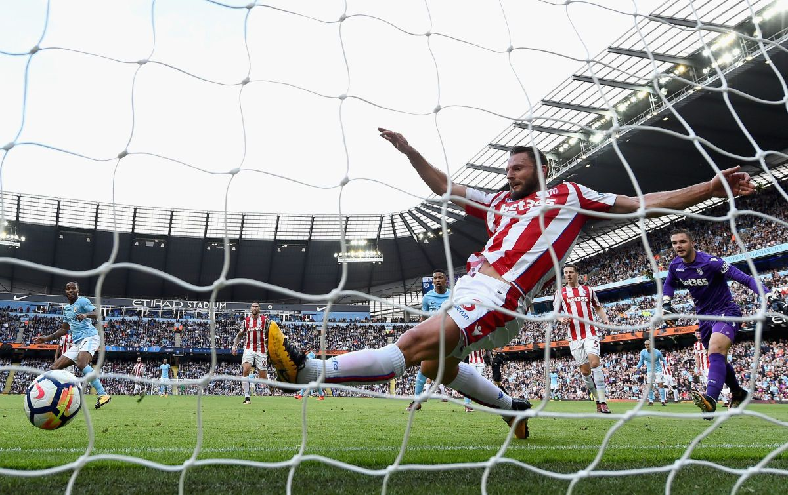

Voici les règles fondamentales du Football :
Un match se déroule en deux temps de 45 minutes chacun.
Retour au sommaireLe ballon ne peut être tenu ou porté, sauf par le gardien de but dans sa zone de pénalité.
Retour au sommaireUn but est marqué lorsque le ballon passe complètement entre les poteaux et sous la barre transversale.
Retour au sommaireQuand le ballon sort sur les côtés, il y a une touche.
Retour au sommaireUn joueur est en hors-jeu s'il est dans la zone adverse et qu'il est plus proche du but adverse que le ballon et le dernier défenseur.
Retour au sommaireUn penalty est un coup franc accordé à l'équipe qui a commis une faute dans sa zone de pénalité.
Retour au sommaireUn joueur peut être remplacé par un autre joueur pendant le match, sous certaines conditions.
Retour au sommaire